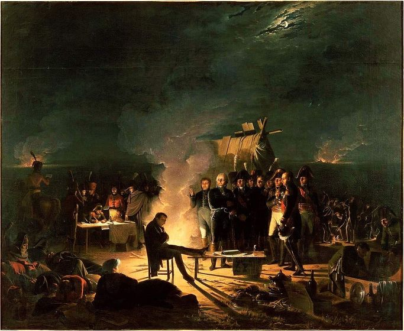
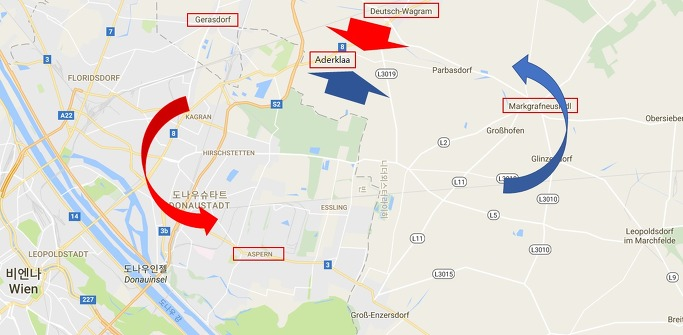
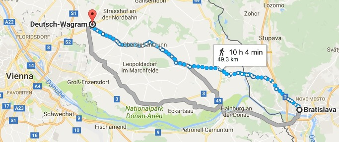

바그람 전투 (제5편) - 혼돈 속의 새벽
게시: 2017-07-02T22:02:30+09:00
7월 5일 밤 11시 경 첫날 전투가 초라하게 끝난 이후, 병사들은 야영 준비를 했습니다. 때가 7월이라 낮에는 무척 더웠지만 의외로 밤은 무척 추웠고, 오스트리아군도 프랑스군도 여기저기 모닥불을 피우고 몸을 녹였습니다. 보통의 경우 나폴레옹의 병사들은 하루 종일 목숨을 걸고 죽을 힘을 다해 싸운 뒤 야영을 할 때는 주린 배를 움켜쥔 채 아무 것도 못 먹고 잠을 청해야 했으나, 이날은 좀 달랐을 것입니다. 아스페른-에슬링 전투 이후 나폴레옹은 전투 준비에 만전을 기했고, 참모장인 베르티에에게 병사들을 위해 60만병의 와인과 30만회 배급할 분량의 브랜디를 준비하도록 한 바 있을 정도로 보급에 신경을 많이 썼습니다. 덕분에 로바우 섬으로부터 다리를 건너는 병사들의 배낭 속에는 2일치의 식량과 브랜디가 들어 있었습니다. 병사들은 모닥불 옆에서 (아마도 건빵일 가능성이 많은데) 이 식량과 브랜디를 들며 첫날의 혼한스러운 전투에서 살아남은 것을 자축했습니다.
병사들이 이렇게 휴식을 취하는 동안에도 장군님들은 바빴습니다. 나폴레옹은 이미 언급한 것처럼 저녁에 제대로 해내지 못했던 것을 그 다음날 새벽부터 해낼 생각이었습니다. 즉 중앙에서 우디노와 베르나도트, 막도날드가 견제 공격을 하는 동안 다부가 동쪽 끝 마르크그라프노이지들로부터 강력한 공세를 퍼부어 오스트리아 전선을 돌돌 말아올린다는 것이었지요. 나폴레옹은 각 군단장들을 자신의 천막으로 소집하여 이런 계획을 알려주었고, 특히 가장 서쪽에 배치된 마세나의 제4 군단은 바그람 바로 남쪽에 위치한 요충지인 아더클라(Aderklaa) 마을 근처로, 즉 원래 위치보다 훨씬 더 중앙부 쪽으로 이동하도록 했습니다. 나폴레옹의 생각으로는 루스바흐와 비삼베르크의 두 고지대를 양날개로 삼은 오스트리아군의 의도대로 양측 날개를 다 상대할 필요는 없으며, 다부가 오스트리아군의 왼쪽 날개를 부러뜨리면 오른쪽 날개, 즉 게라스도르프(Gerasdorf) 쪽의 오스트리아군은 제풀에 무너질 것이었습니다. 따라서 굳이 마세나의 제4 군단을 거기서 놀려둘 이유가 없으니 중앙부의 견제 공격에 활용하자는 것이었습니다. 다만, 그렇다고 로바우섬과의 연결 고리인 아스페른(Aspern) 마을을 텅 비워둘 수는 없었으므로, 아스페른에는 마세나 휘하 중 부데(Budet)의 사단을 남겨 두기로 했습니다.

(바그람에서의 7월 5일 밤 ~ 7월 6일 새벽 사이의 나폴레옹의 작전 회의 모습입니다.)
그러나 나폴레옹의 이 심야 회의에 불참한 주요 군단장 하나가 있었습니다. 바로 베르나도트였습니다. 대부분이 작센 병사들로 구성된 그의 제9 군단은 원래부터 사기가 높지는 않았는데, 바그람 야간 공격에 참여했다가 흰색 군복 때문에 오스트리아군으로 오인받고 양측에서 총질을 당하는 바람에 완전히 무너져 버린 상태였습니다. 베르나도트는 흩어진 부대들을 다시 모으느라 나폴레옹의 소환에도 응하지 못할 정도로 정신이 없었습니다. 시작할 때부터 휘하 3개 사단 중 뒤파 사단을 막도날드에게 빌려줘야 했었고 바그람에서 큰 신체적, 심리적 타격을 받은 덕분에 그의 제9 군단은 군단이라는 이름이 초라할 정도로 고작 6천명 정도로 크게 줄어 있었습니다. 이런 상황은 베르나도트로 하여금 큰 실수를 저지르게 합니다. 그날 밤, 그의 군단이 지켜야 할 위치는 바로 아더클라였습니다. 이 곳은 전체 전선의 중심지인 도이치-바그람 마을 바로 아래 쪽에 위치한 마을로서, 오스트리아군이 밀고 내려올 경우 평평한 저지대인 마르히펠트에서 주변 수 km 이내에서는 유일하게 유리한 방어물로 삼을 수 있는 요충지였습니다. 그런데, 가뜩이나 나폴레옹에게 삐져 있었던 베르나도트는 이렇게 오스트리아군 중앙부에서 지척거리에 있는 요충지를 이렇게 적은 병력으로 지키라는 명령이 매우 부당하다고 생각했습니다. 그가 파악하기로는 자신의 제9 군단만 너무 오스트리아군에 바싹 붙어 있고 주변에는 자신을 지원해줄 우군도 없는 상황이었으므로, 오스트리아군이 만약 반격해온다면 그의 제9 군단은 전멸당하기 딱 좋았습니다. 물론 사실은 그렇지 않았습니다. 나폴레옹은 이미 마세나의 제4 군단을 아더클라 바로 남쪽으로 이동시켜 베르나도트를 지원해주도록 지시했었지요. 베르나도트는 바로 전에 열린 심야 회의에 불참했기 때문에 그 사실을 모르고 있었을 뿐이었습니다.
그래서 베르나도트는 자기 딴에는 과감한 결정을 내립니다. 아더클라에서 철수하여 남쪽으로 2~3km 물러나기로 한 것이지요. 그의 자기 합리화는 대략 이랬습니다. "남쪽으로 흩어진 병력을 모으기 위해서는 어차피 남쪽으로 내려가는 것이 더 유리하다. 그리고 만약 오스트리아군이 습격해온다면 기습을 당하는 것보다는 차라리 아더클라를 먼저 내준 뒤 반격을 가해 탈취하는 것이 더 유리하다." 더 최악인 것은 베르나도트가 이 사실을 나폴레옹에게 알리지 않았다는 것이었습니다. 어차피 나폴레옹은 자기 말이라면 콩으로 메주를 쑨다고 해도 믿지 않는 사람이었으므로, 차라리 알리지 않는 것이 더 낫다는 생각이었습니다. 베르나도트의 이 일탈행동은 몇 시간 뒤 전체 프랑스군 전선을 위기로 몰아넣습니다.
한편, 루스바흐 고원 위쪽에서도 작전 회의가 한창이었습니다. 카알 대공은 몇 시간 전의 전투를 직접 현장 지휘하느라 지치고 가벼운 부상까지 입었지만 몹시 흥분된 상태였습니다. 치열한 전투를 치르고 보니, 그의 오스트리아 병사들은 의외로 잘 싸워주었던 것입니다. 비록 낮에 마르히펠트 평원에서 노르드만 장군의 전위대가 사상자 6천이라는 큰 피해를 입기는 했지만, 야간 전투에서 프랑스군은 더 큰 피해를 입고 물러났으니 첫날 전투는 사실상 그의 승리였습니다. 그는 여기서 용기백배하여 오히려 선제 공격을 가하기로 합니다. 이건 매우 정확한 판단이었습니다. 어차피 오스트리아군의 병력 수가 더 적었고, 그에 비해 지켜야 할 전선은 훨씬 길었습니다. 반원형 전선의 외곽을 점거한 오스트리아군이 약 18km에 걸쳐 흩어져 있는 동안, 반원형 내곽에서 대치 중인 프랑스군의 전선은 약 10km로 훨씬 더 짧았습니다. 이런 경우 프랑스군의 집중된 공격에 오래 버티기가 어려울 것이 뻔했습니다. 반대로, 자신들이 고지를 점거하고 있다보니 결정적으로 유리한 것이 있었습니다. 바로 적진 관측이었지요.
위에서 7월 5일 밤~6일 새벽이 여름치고는 유난히 추워서 양측 병사들이 모두 모닥불을 피웠다고 했지요. 그 넓은 벌판에 양측 거의 20만명이 넘는 병력이 모닥불을 피우고 여기저기 드러누운 모습은 여러가지 의미에서 꽤 장관이었을 것입니다. 그러나 그런 상황은 오스트리아군에게 확실히 더 유리했습니다. 카알 대공은 루스바흐(Russbach) 고원 지대 위에서 나폴레옹보다 10m라는 높이를 점유하고 있었으므로, 그런 모닥불을 통해서라도 프랑스군의 배치를 더 잘 파악할 수 있었습니다. 확실히 프랑스군은 동쪽, 즉 오스트리아군의 좌익 쪽이 더 강해 보였고, 우익 쪽은 도나우 강이라는 자연 장애물이 있어서인지 확실히 약해보였습니다. 우연인지 필연인지, 카알 대공도 결국 나폴레옹과 동일한 작전을 펼치기로 했습니다. 즉, 적의 좌익을 치고 들어가 중앙부로 돌돌 말아올린다는 것이었습니다. 이렇게 선제 공격에 나설 경우, 오스트리아군의 길게 늘어진 포진이 오히려 장점으로 작용할 수 있었습니다. 오스트리아군의 우익이 프랑스군의 좌익보다 더 길게 뻗어 있었으므로 프랑스군 좌익의 후방으로 쉽게 파고들 수 있었던 것입니다. 게다가 카알 대공이 서쪽, 즉 프랑스군의 좌익을 치기로 한 것에는 중요한 이유가 하나 더 있었습니다. 바로 요한 대공이 이끄는 '오스트리아 내부군(Army of Inner Austria)'의 존재였습니다.

(파란색 화살표가 나폴레옹이 생각했던 7월 6일 아침의 프랑스군 공격 방향이었고, 붉은색 화살표가 카알 대공이 생각했던 같은 시각 오스트리아군 공격 방향이었습니다.)
나폴레옹이 강을 건너기 직전이던 7월 4일 아침, 카알 대공은 이제 곧 결전이 있을 것임을 확신하고 동쪽의 프레스부르크에 주둔하고 있던 요한 대공에게 '속히 이쪽으로 달려와 내 좌익에 합류하라'고 메시지를 보낸 바 있었습니다. 프레스부르크는 오늘날 슬로바키아의 수도인 브라티슬라바로서, 약 50km, 짐이 없다면 걸어서 약 10시간 걸리는 거리였습니다. 행군 준비에도 시간이 걸리겠고 또 포병대와 보급품 마차 등의 치중대를 끌고 오는데도 시간이 걸리겠습니다만, 강행군을 한다면 약 15시간이면 주파 가능한 거리였습니다. 따라서 동쪽 지평선에서는 지금 당장이라도 요한 대공이 나타날 수 있었습니다. 이 긴박한 메시지를 소지한 전령은 쾌마를 타고 달렸으므로 4~5 시간이면 충분히 프레스부르크에 도착할 것이라고 카알 대공은 기대했을 것입니다. 그러나 정작 요한 대공은 무려 23시간 뒤인 7월 5일 새벽에야 이 메시지를 받았습니다. 그때부터라도 준비를 했다면 늦어도 7월 5일 낮 12시에는 행군을 시작하여 7월 6일 새벽 3시에는 충분히 도착할 수 있었습니다. 지금 당장 소식이 없더라도 당장 1시간 뒤, 아무리 늦어도 새벽 녘에는 도착을 알리는 전령이 나타날 수 있었지요. 카알 대공이 서쪽에서 동쪽으로 프랑스군을 밀어붙이는 동안 반대편이 동쪽에서 요한 대공의 군대가 나타난다면 그야말로 프랑스군의 관 뚜껑에 못을 박는 순간이 될 것이었습니다.

(이론 상으로는 약 50km의 거리를 10시간에 주파할 수 있습니다. 그러나 이는 사람이 지치지 않고 또 등에 묵직한 총과 배낭을 짊어지지 않는 경우의 이야기입니다. 또 길도 좋아야 하고요. 군대에서는 그런 점을 고려하여 1시간에 4km, 하루 8시간 32km를 정상적인 행군거리로 간주합니다. 물론 전투 상황에서는 그보다 훨씬 더 빨리, 더 멀리 갈 수도 있습니다.)
작전은 완벽했습니다. 문제는 전날 나폴레옹의 어설픈 야간 공격이 그랬듯이 긴 전선 전체를 어떻게 조율하느냐였지요. 카알 대공은 아침에 날이 밝는 대로 프랑스군이 공격해 올 것이 뻔했으므로, 그보다 앞서 선제 공격을 하기 위해 일제 공격 시간을 새벽 4시로 명기했습니다. 그러나 이번에는 길게 늘어져 있던 오스트리아군 전선의 거리가 약점으로 작용했습니다. 전선의 길이가 너무 길었으므로 카알 대공은 모든 군단장들을 소환해 놓고 대면한 상태로 작전 회의를 하지 못했습니다. 그는 결정 내용을 명령서로 적어 각지에 주둔한 군단장들에게 전령편으로 보냈는데, 거리도 멀고 야간이었던지라 이 명령서들이 너무 늦게 도착했습니다. 특히 가장 중요한 역할을 하기로 되어 있던 오스트리아군의 우익, 즉 클레나우의 제6 군단과 콜로브라트(Kollowrat)의 제3 군단에는 늦어도 밤 1시까지는 명령서가 도착해야 했으나, 무려 2시간이나 늦은 새벽 3시에야 도착했습니다. 1시간 안에 자고 있던 군단 병력을 깨워 전투 준비를 갖춘 뒤 공격 개시 지점까지 행군시킨다는 것은 불가능한 일이었습니다. 특히 이들은 이런 강행군에 익숙한 프랑스군이 아니라 느려터진 오스트리아군이었습니다. 아마 제때 명령서가 도착했다고 하더라도 3시간만에 준비와 행군을 끝냈을지는 의심스러운 일이었지요. 이들은 결국 날이 훤하게 밝은 뒤인 아침 7시 반이 넘어서야 공격 개시점에 도착할 수 있었습니다.
하지만 역설적으로 견제 공격을 수행하게 되어 있던 오스트리아군의 좌익, 즉 로젠베르크(Rosenberg)의 제4 군단은 제 시간에 명령서를 받아 들었고, 제 시간인 새벽 4시에 공격 개시에 나설 수 있었습니다. 그리고 그들 앞에는 역으로 오스트리아군을 기습하려던 프랑스군 최강을 자랑하는 다부의 제3 군단이 공격 준비를 마무리하고 있는 중이었습니다. 7월 6일 새벽, 양측의 전투는 이렇게 혼란에 혼란을 거듭하며 시작됩니다.
Source : The Reign of Napoleon Bonaparte by Robert Asprey
With Napoleon's Guns by Jean-Nicolas-Auguste Noel
http://www.historyofwar.org/articles/battles_wagram.html
https://en.wikipedia.org/wiki/Battle_of_Wagram